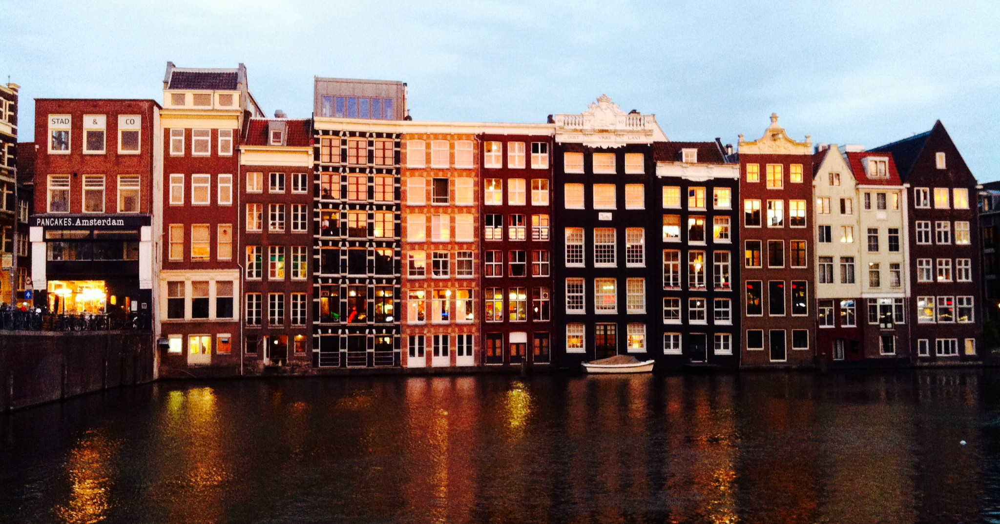

Amsterdam, capital of the Netherlands! These days the city has a population of just over 790.000 inhabitants and is the largest city in the country. Amsterdam is located in the province ‘Noord-Holland’, situated in the west. It is one of the most popular destinations in Europe, receiving more than 4.5 million tourists annually.
Amsterdam has a great history. It is very unique for its large and untouched historic center. It has a rich architectural history, dominated by water. It is a meeting point for all different cultures around the world and has a welcoming attitude towards visitors. Well known for its museums, red light district, coffee shops but also the great variety of eating & drinking places and night life. It even claims to be the ‘Gay capital of Europe’. Therefore a lot of hotels and hostels can be found on different locations, value for money and ambience.
It is a beautiful and romantic city with its antique houses, lovely bridges, famous canals and of course the list of world class attractions!
